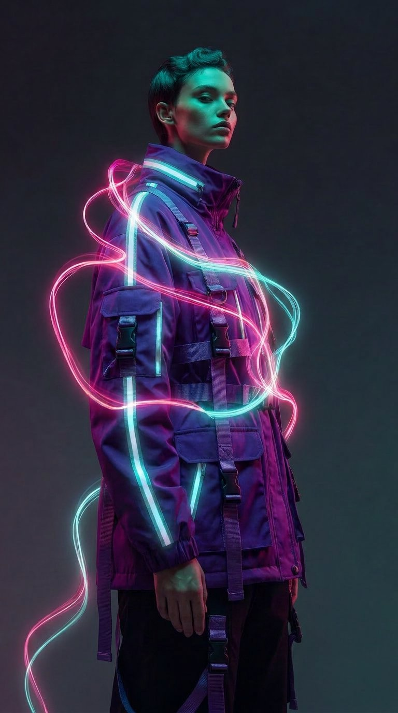
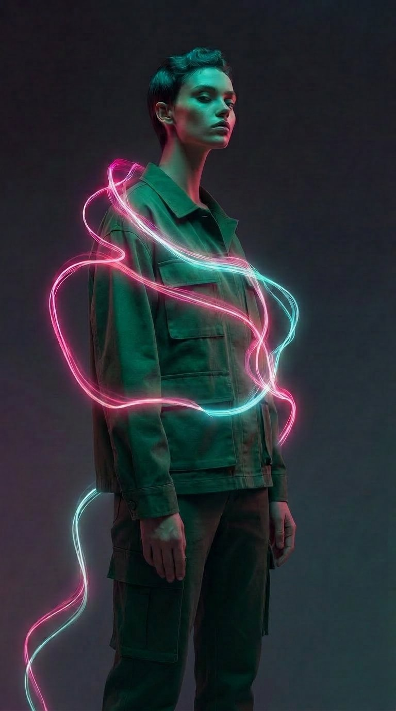

Akt I
Eine Flasche. Achtlos weggeworfen.
Sie überlebt deine Urenkel.
AI · ATELIER · COUTURE
Ein Satz genügt. Die KI entwirft dein Stück, eine fotorealistische Vorschau zeigt es an dir — Schneider bekommen die fertige Spec.
Tippe los — oder sieh zu, wie aus Worten ein Kleidungsstück wird.


Warum es uns gibt
Jede Sekunde wird ein Lastwagen voll Textilien verbrannt oder vergraben. Weniger als 1 % wird je recycelt. Die Faser ist noch gut — das System wirft sie nur weg.
Urban Revolution rettet genau diese Faser — auch das PET aus weggeworfenen Flaschen — und spinnt sie zu Stoff. Du beschreibst ein Stück, unsere KI entwirft es, ein Schweizer Schneider näht es nach deinen neun Maßen. Ein Kleidungsstück. Einmal gefertigt. Für dich. Keine Überproduktion, keine Deponie.
Akt I
Sie überlebt deine Urenkel.
Akt II
Es wird zu diesem Berg.
Akt III
Aber es bleibt nicht dort.
Akt IV
Im Blut von 4 aus 5 Menschen. Auch in deinem.
Akt V
Wenn Technologie nichts mehr fertigt, das niemand will.
Akt VI
Für einen gemacht. Deiner.
Mach dein erstes StückDer wahre Preis
Hinter jeder 5-Franken-Bluse steht ein Mensch. Recherchen der Schweizer NGO Public Eye zeigen: In Zulieferfabriken von Shein nähen Arbeiter:innen bis zu 75 Stunden pro Woche — für Löhne unter dem Existenzminimum.
Relative Carbon-Intensität pro Mrd. $ Umsatz (Rangfolge, illustrativ). Quelle: Commons.
Das ist das System, das wir ersetzen.
Quellen: Ellen MacArthur Foundation · UNEP · Public Eye
Jedes Stück nach deinen 9 Körpermaßen — keine Standardgrößen, kein Kompromiss
Schweizer Atelier, transparente Produktion in CHF, faire Lieferzeit unter 14 Tagen
Generative Designs treffen auf echte Schneider — kein Print-on-Demand, kein Fast-Fashion
Maßerkennung clientseitig — dein Foto verlässt nie dein Gerät, außer du klickst opt-in
Erzähle der KI, was du tragen möchtest. Stil, Farbe, Material, Anlass — alles ist möglich.
Inspiration
Dein KI-generiertes Design erscheint hier
Damit dein Kleidungsstück perfekt sitzt, brauchen wir deine genauen Maße.
Lade ein Ganzkörperfoto hoch (gerade stehend, T-Pose oder Arme leicht zur Seite). MediaPipe analysiert die Pose und schätzt deine Maße automatisch.
100% clientseitig — dein Bild verlässt nie dein Gerät.
Tippe eine Markierung, um den Wert anzupassen
Sieh dein KI-Design auf einem echten Foto von dir — fotorealistisch generiert, nicht als Modell-Annäherung.
So sieht dein KI-Design fotorealistisch an dir aus — lade unter „Maße“ ein Ganzkörperfoto hoch.
Generiere fotorealistische Vorschau...
Sendet dein Foto + die Design-Beschreibung an Replicate (FLUX Kontext) für die fotorealistische Generierung. Externe API, ~10 Sekunden Wartezeit.
Alle Daten, die der Schneider und die Produktion benötigen, in einem Dokument.
Design ID: UR-––––––
––
| Kleidungstyp | –– |
| Material | –– |
| Primärfarbe | –– |
| Passform | –– |
| Konfektionsgröße | –– |
Lade die Vorlage herunter oder sende sie direkt an die Schneiderei.
Alles was du wissen willst, bevor du dein erstes Stück bestellst.
In der Regel 7 bis 14 Werktage zwischen Bestellung und Versand. Komplexere Stücke (mehrlagige Jacken, aufwändige Stickerei) können bis zu 21 Tage benötigen — die geschätzte Lieferzeit zeigen wir dir nach der Generierung.
Für die Maßerkennung läuft alles direkt in deinem Browser über MediaPipe — das Foto verlässt nie dein Gerät und wird nicht gespeichert. Nur wenn du explizit die fotorealistische Vorschau anforderst, wird das Foto einmalig an Replicate (US-Server) gesendet und nach der Generierung sofort wieder verworfen.
Der Preis hängt von Stofftyp, Schnittkomplexität und gewählten Maßen ab. Eine Spanne in CHF zeigen wir dir live in der Spec-Sheet-Vorschau — typisch CHF 145–220 für T-Shirts und Hemden, CHF 220–450 für Hosen und Jacken, CHF 380–680 für Mäntel und Kleider.
Drei Wege zu deinen Maßen — Foto-Auswertung (1 Klick, 100 % clientseitig), manuelle Eingabe der 9 Werte, oder eine Größenpresets (S/M/L/XL) als Startpunkt, die du danach anpassen kannst. Schneider erhalten alle Werte in der Produktions-Spec.
Aktuell arbeiten wir mit Schneider-Ateliers in der Schweiz und Norditalien zusammen — fair entlohnt, traceable Lieferketten, nachhaltige Materialien wo möglich. Für jede Bestellung sehen wir genau, wer welches Stück nach welcher Spec fertigt.
Ja — alle Designs landen in deiner Bibliothek (lokal in deinem Browser), du kannst sie jederzeit wieder laden, anpassen und neu bestellen. Die fotorealistische Vorschau wird auf Wunsch automatisch ans Design angehängt.